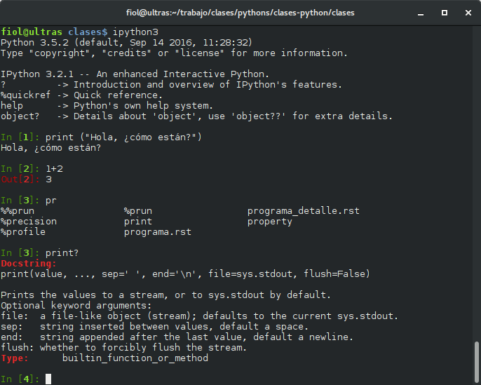
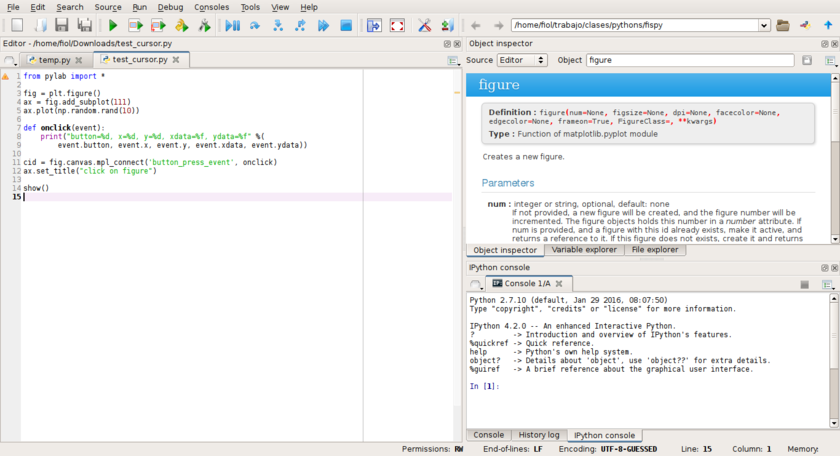
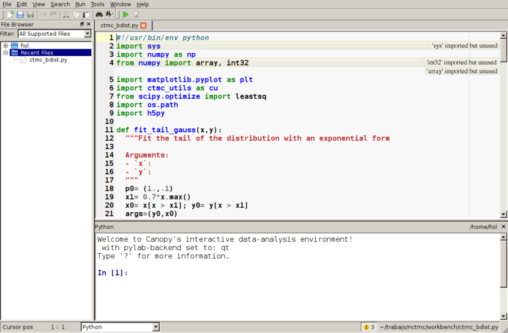

Clase 1: Introducción al lenguaje
Cómo empezar: Instalación y uso
Python es un lenguaje de programación interpretado, que se puede ejecutar sobre distintos sistemas operativos, esto se conoce como multiplataforma (suele usarse el término cross-platform). Además, la mayoría de los programas que existen (y posiblemente todos los que nosotros escribamos) pueden ejecutarse tanto en Linux como en windows y en Mac sin realizar ningún cambio.
Nota
Hay dos versiones activas del lenguaje Python.
Python2.X (Python 2) es una versión madura, estable, y con muchas aplicaciones, y utilidades disponibles. No se desarrolla pero se corrigen los errores. Su uso ha disminuido mucho en los últimos años y esencialmente todo el ecosistema de bibliotecas se ha convertido a Python-3
Python3.X (Python 3) es la versión actual. Se introdujo por primera vez en 2008, y produjo cambios incompatibles con Python 2. Por esa razón se mantienen ambas versiones y algunos de los desarrollos de Python 3 se portan a Python 2. En este momento la gran mayoría de las utilidades de Python 2 han sido modificadas para Python 3 por lo que, salvo muy contadas excepciones, no hay razones para seguir utilizando Python 2 en aplicaciones nuevas.
Instalación
En este curso utilizaremos Python 3
Para una instalación fácil de Python y los paquetes para uso científico se pueden usar alguna de las distribuciones:
En linux se podría instalar alguna de estas distribuciones pero puede ser más fácil instalar directamente todo lo necesario desde los repositorios. Por ejemplo en Ubuntu:
`sudo apt-get install ipython3 ipython3-notebook spyder python3-matplotlib python3-numpy python3-scipy`
o, en Fedora 28, en adelante:
`sudo dnf install python3-ipython python3-notebook python3-matplotlib python3-numpy python3-scipy`
Editores de Texto:
Editores Multiplataforma e IDEs
Documentación y ayudas
Algunas fuentes de ayuda constante son:
En particular el Tutorial, también en español y la referencia de bibliotecas
En una terminal, puede obtener información sobre un paquete con
pydoc <comando>En una consola interactiva de Python, mediante
help(<comando>)La documentación de los paquetes:
Matplotlib, en particular la galería
Buscar “palabras clave + python” en un buscador. Es particularmente útil el sitio stackoverflow
Uso de Python: Interactivo o no
Interfaces interactivas (consolas/terminales, notebooks)
Hay muchas maneras de usar el lenguaje Python. Es un lenguaje
interpretado e interactivo. Si ejecutamos la consola
(cmd.exe en windows) y luego python, se abrirá la consola
interactiva
En la consola interactiva podemos escribir sentencias o pequeños bloques de código que son ejecutados inmediatamente. Pero la consola interactiva estándar no tiene tantas características de conveniencia como otras, por ejemplo IPython que viene con “accesorios de comfort”.
La consola IPython supera a la estándar en muchos sentidos. Podemos
autocompletar (<TAB>), ver ayuda rápida de cualquier objeto (?),
etc.
Programas/scripts
Una forma muy común/poderosa de usar Python es en forma no interactiva, escribiendo programas o scripts. Esto es, escribir nuestro código en un archivo con extensión .py para luego ejecutarlo con el intérprete. Por ejemplo, podemos crear un archivo hello.py (al que se le llama módulo) con este contenido:
print("Hola Mundo!")
Si ejecutamos python hello.py o ipython hello.py se ejecutará el
interprete Python y obtendremos el resultado esperado (impresión por
pantalla de “Hola Mundo!”, sin las comillas)
Python no exige un editor específico y hay muchos modos y maneras de programar. Lo que es importante al programar en Python es que la indentación define los bloques (definición de loops, if/else, funciones, clases, etc). Por esa razón es importante que el tabulado no mezcle espacios con caracteres específicos de tabulación. La manera que recomendaría es usar siempre espacios (uno usa la tecla [TAB] pero el editor lo traduce a un número determinado de espacios). La indentación recomendada es de 4 espacios (pero van a notar que yo uso 2).
Un buen editor es Spyder que tiene características de IDE (entorno integrado: editor + ayuda + consola interactiva).
Otro entorno integrado, que funciona muy bien, viene instalado con Canopy.
También Pycharm funciona muy bien

En todos los casos se puede ejecutar todo el código del archivo en la consola interactiva que incluye. Alternativamente, también se puede seleccionar sólo una porción del código para ejecutar.
Notebooks de Jupyter o Jupyter-Lab
Para trabajar en forma interactiva es muy útil usar los Notebooks de Jupyter. El notebook es un entorno interactivo enriquecido. Podemos crear y editar “celdas” código Python que se pueden editar y volver a ejecutar, se pueden intercalar celdas de texto, fórmulas matemáticas, y hacer que los gráficos se muestren inscrutados en la misma pantalla o en ventanas separadas. Además se puede escribir texto con formato (como este que estamos viendo) con secciones, títulos. Estos archivos se guardan con extensión .ipynb, que pueden exportarse en distintos formatos tales como html (estáticos), en formato PDF, LaTeX, o como código python puro. (.py)
Comandos de Ipython
Algunos de los comandos mágicos
Algunos de los comandos mágicos más importantes son:
%cddirect (Nos ubica en la carpeta direct)%ls(muestra un listado del directorio)%pwd(muestra el directorio donde estamos trabajando)%runfilename (corre un dado programa)%hist(muestra la historia de comandos utilizados)%mkdirdname (crea un directorio llamado dname)Tab completion: Apretando [TAB] completa los comandos o nombres de archivos.
En la consola de IPython tipee %cd ~ (i.e. “%cd” – “espacio” –
“tilde”, y luego presione [RETURN]. Esto nos pone en el directorio HOME
(default).
Después tipee %pwd (print working directory) y presione [RETURN]
para ver en qué directorio estamos:
%pwd
'/home/fiol/Clases/IntPython/clases-python/clases'
%cd ~
/home/fiol
%pwd
'/home/fiol'
En windows, el comando pwd va a dar algo así como:
In [3]: %pwd
Out[3]: C:\\Users\\usuario
Vamos a crear un directorio donde guardar ahora los programas de ejemplo
que escribamos. Lo vamos a llamar scripts.
Primero vamos a ir al directorio que queremos, y crearlo. En mi caso lo voy a crear en mi HOME.
%cd
%mkdir scripts
%cd scripts
Ahora voy a escribir una línea de Python en un archivo llamado
prog1.py. Y lo vamos a ver con el comando %cat
%cat prog1.py
%run prog1.py
%hist
Hay varios otros comandos mágicos en IPython. Para leer información sobre el sistema de comandos mágicos utilice:
%magic
Finalmente, para obtener un resumen de comandos con una explicación breve, utilice:
%quickref
Comandos de Shell
Se pueden correr comandos del sistema operativo (más útil en linux)
tipeando ! seguido por el comando que se quiere ejecutar. Por
ejemplo:
comandos
!echo "1+2" >> prog1.py
!echo "print('hola otra vez')" >> prog1.py
%cat prog1.py
%run prog1.py
!date
Ejercicios 01 (a)
Abra una terminal (consola) o notebook y utilícela como una calculadora para realizar las siguientes acciones:
Suponiendo que, de las cuatro horas de clases, tomamos dos descansos de 15 minutos cada uno y nos distraemos otros 13 minutos, calcular cuántos minutos efectivos de trabajo tendremos en las 16 clases.
Para la cantidad de alumnos presentes en el aula: ¿cuántas horas-persona de trabajo hay involucradas en este curso?
Muestre en la consola de Ipython:
el nombre de su directorio actual
los archivos en su directorio actual
Cree un subdirectorio llamado
tmpsi está usando linux, muestre la fecha y hora
Borre el subdirectorio
tmp
Para cubos de lados de longitud L = 1, 3, y 5: calcule su superficie y su volumen.
Para esferas de radios r = 1, 3, 5 y 8, calcule su superficie y su volumen.
Fíjese si alguno de los valores: \(x=0.49\), \(x=0.50\), \(x=0.51\) es un cero de la función \(f(x)=x^{2} + x/2 - 1/2\).
.